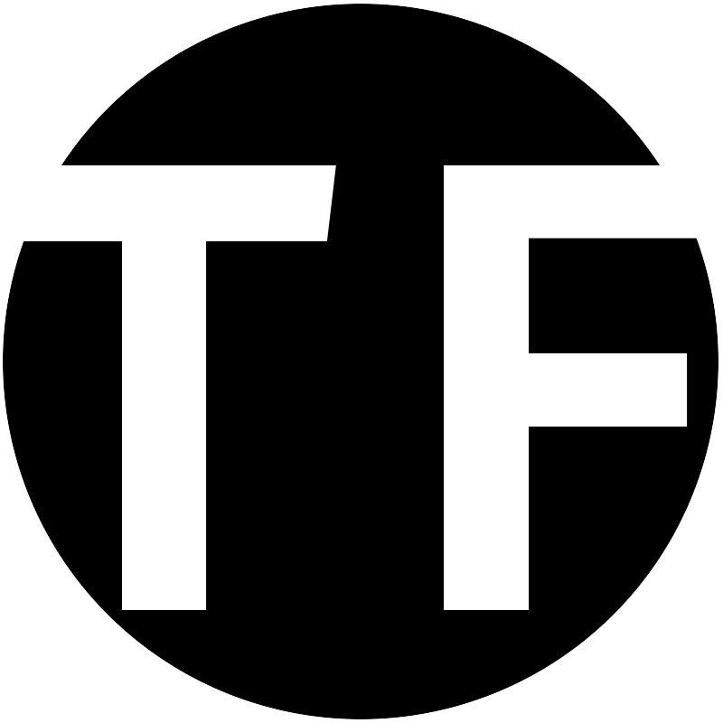
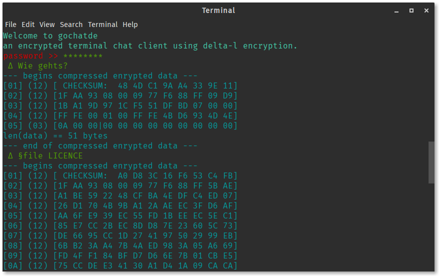

 TiFalch Organization

We care about fast encryption and peer-to-peer data transmission.
That is why we are working on a fast and easily hackable chat client using our delta-l encryption and gzip compression library.